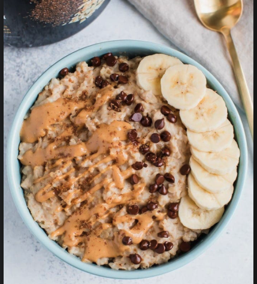

Protein Oats

Desription
Proats stand for Proetin Oats and like the name they are oats that are made with a scoop of the protein of your choice with whatever toppings you would like.
Ingredients
- Old Fashioned Rolled Oats
- Protein Powder
- Brown Sugar
- Almond Milk
- Toppings of your choice
Steps
- Pour 1 cup of oats into a bowl
- Put one scoop of the protein of your choice into the bowl
- Put 1/4 tablespoon of brown sugar into bowl
- Pour 1 1/4-1/2 cup of almond milk into bowl
- stir and put the bowl into the microwave for 1 minute and 30 seconds
- Add Whatever toppings you would like and enjoy a warm cup of Proats